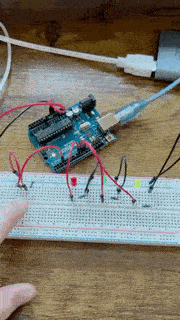
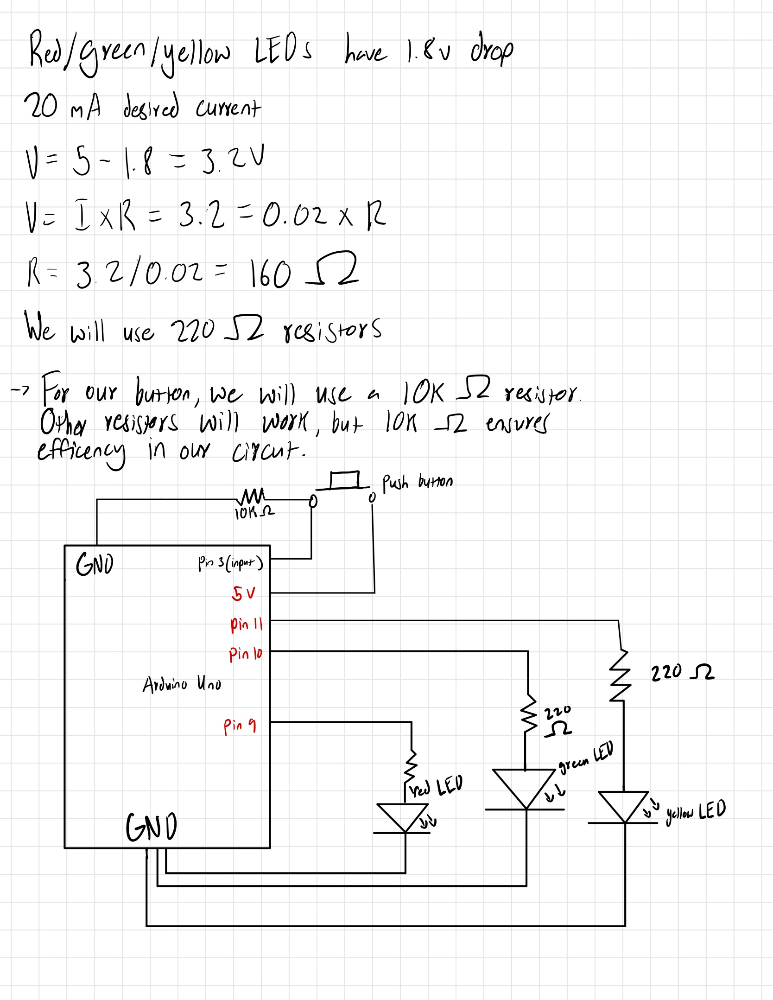
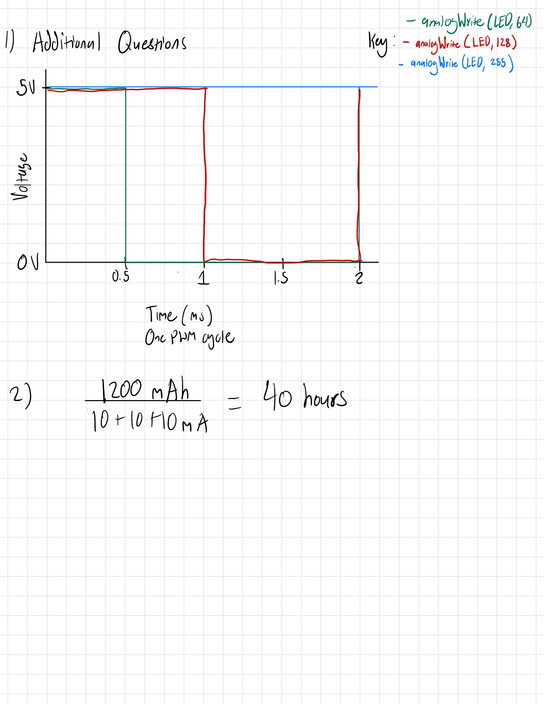
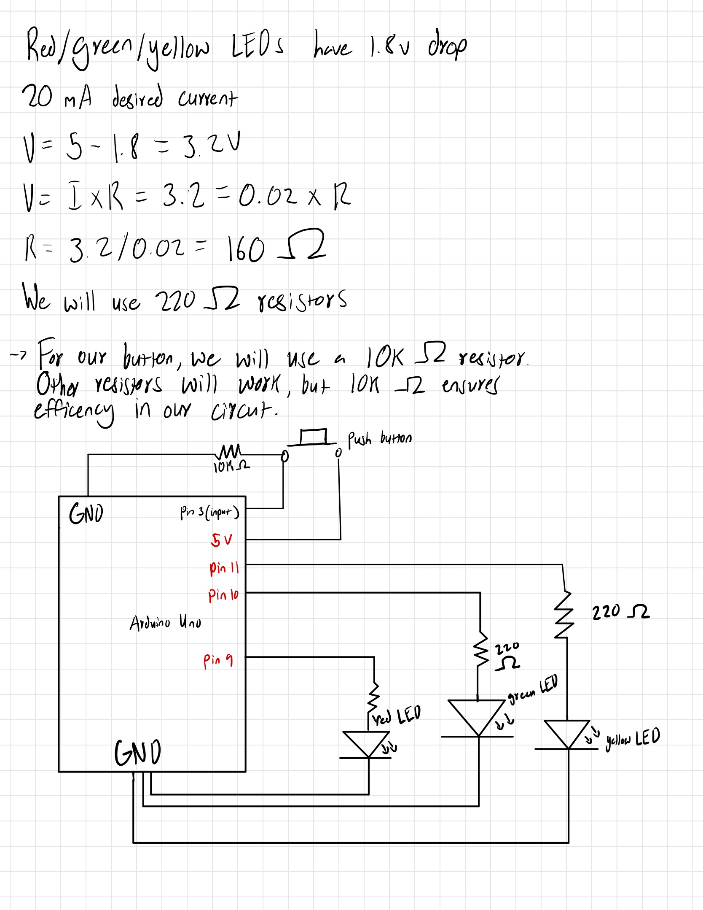
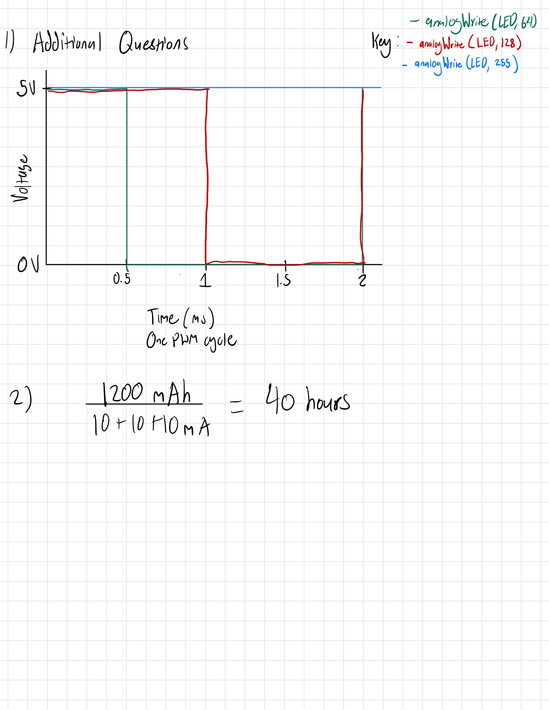

Keyvyn Rogers Assignment 2
//Button has a value of 0 when not pressed
int ButtonState = 0;
//Initalizing button input pin
int Button = 3;
void setup() {
//Initializing pin 9
pinMode(9, OUTPUT);
//Initializing pin 10
pinMode(10, OUTPUT);
//Initializing pin 11
pinMode(11, OUTPUT);
//Initializing pin 3 as Button
pinMode(Button, INPUT);
}
void loop() {
// Determining whether or not the button is being pressed and setting it as Button State
ButtonState = digitalRead(Button);
//If Button is pressed then we will execute fading functions
if(ButtonState != 0) {
// The following block is from the following Arduino example.
// https://docs.arduino.cc/built-in-examples/analog/Fading/
// I have replaced the correspenidng pins in the analogWrite function
for (int fadeValue = 255; fadeValue >= 0; fadeValue -= 5) { // fade in from min to max in increments of 5 points:
analogWrite(9, fadeValue); // sets the value (range from 0 to 255):
delay(30); // wait for 30 milliseconds to see the dimming effect
}
for (int fadeValue = 255; fadeValue >= 0; fadeValue -= 5) { // fade in from min to max in increments of 5 points:
analogWrite(10, fadeValue); // sets the value (range from 0 to 255):
delay(30); // wait for 30 milliseconds to see the dimming effect
}
for (int fadeValue = 255; fadeValue >= 0; fadeValue -= 5) { // fade in from min to max in increments of 5 points:
analogWrite(11, fadeValue); // sets the value (range from 0 to 255):
delay(30); // wait for 30 milliseconds to see the dimming effect
}
}
else {
// Turn LED off when button is not pressed
digitalWrite(9, LOW);
// Turn LED off when button is not pressed
digitalWrite(10, LOW);
// Turn LED off when button is not pressed
digitalWrite(11, LOW);
}
}

 


